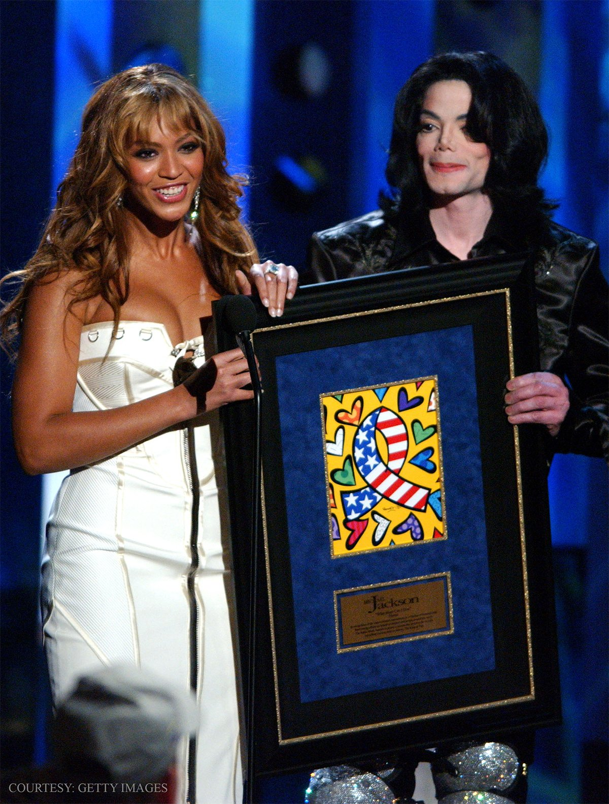

Melodies that Echo Forever
pop
Pop music, originating in the mid-1950s in the United States and the United Kingdom, is a genre characterized by its catchy melodies, mass appeal, and youth-oriented focus. During its early years, pop music encompassed rock and roll and other youth-driven styles. However, as time passed, it evolved into music that was more commercial, ephemeral, and accessible. Key features of pop music include repeated choruses, **short to medium-length songs**, and rhythms that are dance-friendly. While it often borrows elements from other genres like rock, urban, dance, Latin, and country, pop music remains distinct and continually evolves to adapt to changing tastes and trends. Iconic artists like Madonna, Michael Jackson, and **Beyoncé** have significantly shaped the pop music landscape, making it a dynamic and influential genre.
Micheal Jackson
Michael Joseph Jackson (August 29, 1958 – June 25, 2009) was an American singer, songwriter, dancer, and philanthropist. Known as the "King of Pop", he is widely regarded as one of the most significant cultural figures of the 20th century. During his four-decade career, his contributions to music, dance, and fashion, along with his publicized personal life, made him a global figure in popular culture. Jackson influenced artists across many music genres. Through stage and video performances, he popularized complicated street dance moves such as the moonwalk, which he named, as well as the robot.
More InfoBeyoncé
Beyoncé Giselle Knowles-Carter (/biˈɒnseɪ/ ⓘ bee-ON-say;[11] born September 4, 1981)[12] is an American singer, songwriter and businesswoman. Dubbed as "Queen Bey" and a prominent cultural figure of the 21st century, she has been recognized for her artistry and performances, with Rolling Stone naming her one of the greatest vocalists of all time. As a child, Beyoncé started performing in various singing and dancing competitions. She rose to fame in the late 1990s as a member of the R&B girl group Destiny's Child, one of the best-selling girl groups of all time. Their hiatus saw the release of Beyoncé's debut album, Dangerously in Love (2003). She then followed with the US number-one solo albums B'Day (2006), I Am... Sasha Fierce (2008), and 4 (2011). After creating her own management company Parkwood Entertainment, Beyoncé achieved critical acclaim for the experimental visual albums Beyoncé (2013) and Lemonade (2016), which explored themes such as feminism and womanism. With her Black queer-inspired dance album Renaissance (2022) and country album Cowboy Carter (2024) from her trilogy project, she became the first female artist to have their first eight studio albums debut at number one on the Billboard 200.
more Info